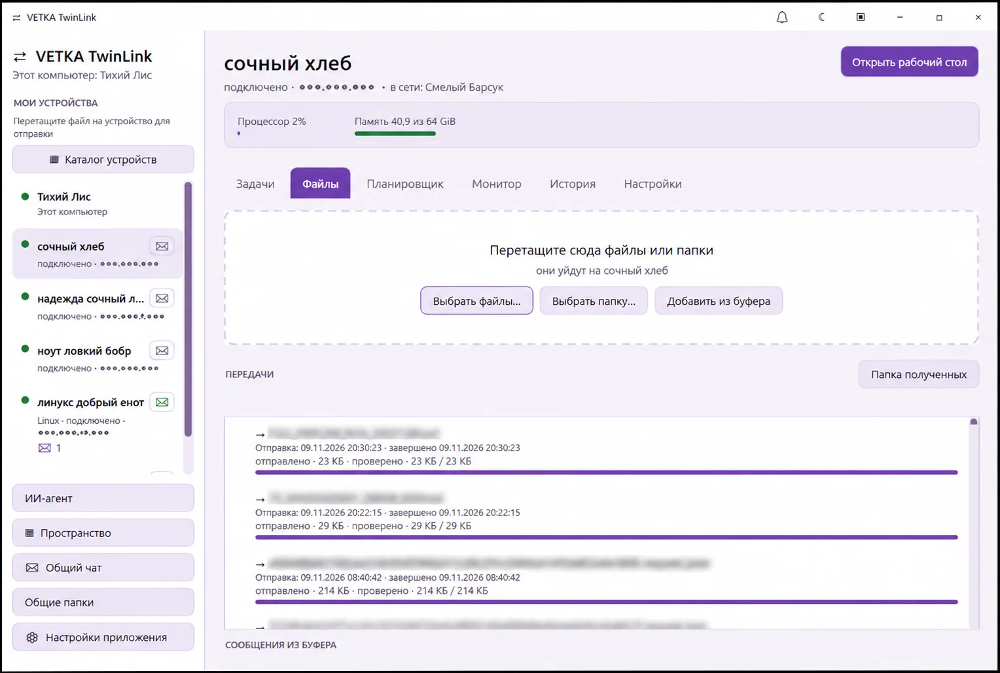
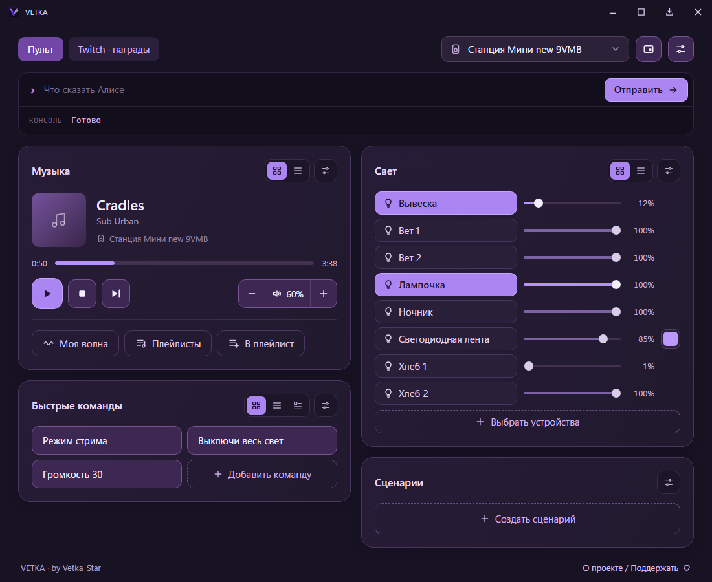
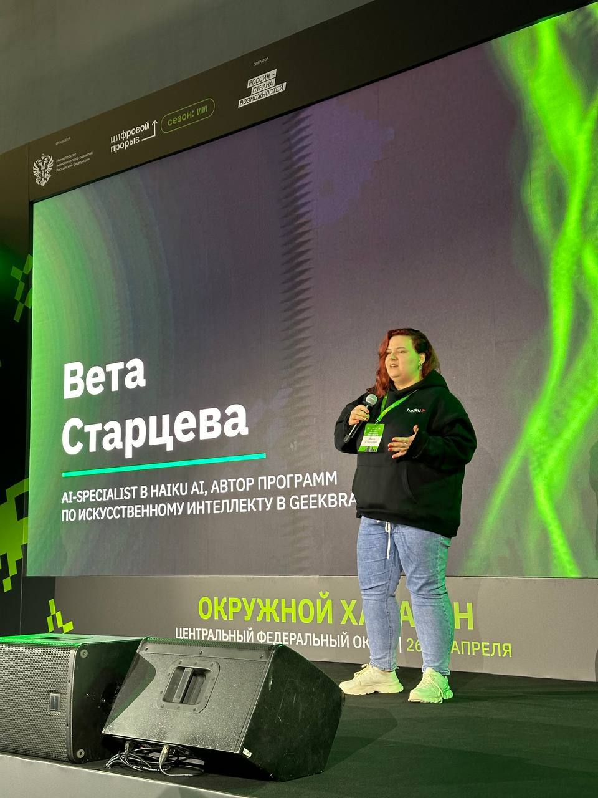

01 / ОБУЧЕНИЕ
VETKA. Читаем по шагам
Бесплатный тренажёр чтения для детей: буквы, слоги, слова, тексты и задания. С особым вниманием к детям с аутизмом, СДВГ и ЗПР.
Приложения и инструменты для учёбы, творчества и повседневных задач. Разные идеи, которые хочется воплотить и которыми можно поделиться.
Бесплатный тренажёр чтения для детей: буквы, слоги, слова, тексты и задания. С особым вниманием к детям с аутизмом, СДВГ и ЗПР.
Генератор корпусов и ящиков для 3D-печати. Размеры, конструкция и детали — под вашу мастерскую и ваши вещи.

Приложение для компьютеров в локальной сети: файлы, общение и рабочее пространство рядом с инструментами для устройств.

Пульт на компьютере для управления Алисой, музыкой и светом. Дополнительно — инструменты для подключения к трансляциям на Twitch.

Вета Старцева, моё почтение! В сети — Vetka_Star. Я разработчик, художник и немного изобретатель. Создаю приложения, сервисы и инструменты под брендом VETKA. Люблю находить нестандартные решения, автоматизировать рутину и придумывать то, чего мне самой не хватает.
Работаю с искусственным интеллектом, разрабатываю инструменты для графики и 3D, аддоны для Blender и собственные программы. Увлекаюсь моделированием, 3D-печатью и всякими инженерными экспериментами. Иногда всё начинается с простой идеи сделать жизнь удобнее, а заканчивается полноценным программным проектом.
Мой путь в AI — это не только разработка, но и работа с сообществом. Я основала студию нейроиллюстраторов, преподавала искусственный интеллект в GeekBrains, заняла второе место на AI News Marketing Hackathon и была членом жюри хакатона «Россия — Цифровой прорыв», сезон «Искусственный интеллект».
А ещё я художник и иллюстратор: рисую в традиционных и цифровых техниках, создаю персонажей и книжные обложки. Мне нравится соединять творчество, программирование и технологии. Именно на пересечении этих интересов и рождаются проекты VETKA.
Варианты моего ника: Ветка Стар, Vetka Star, Vetka_Star, VetkaStar, Veta Star, vetastar, vetka.star, veta.star, vetka-star, veta-star. Если где-то видите такой ник, скорее всего, это я)